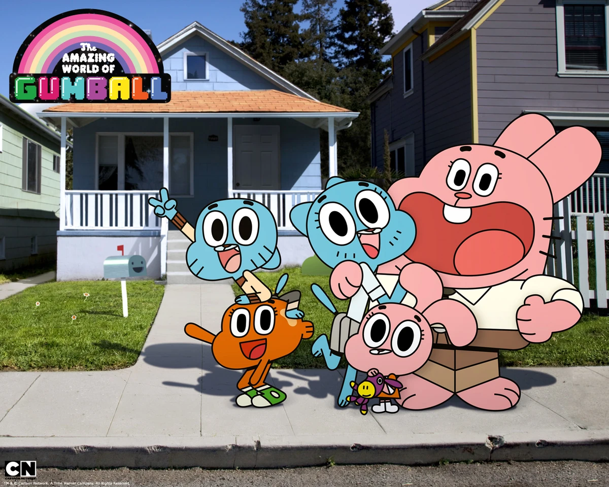
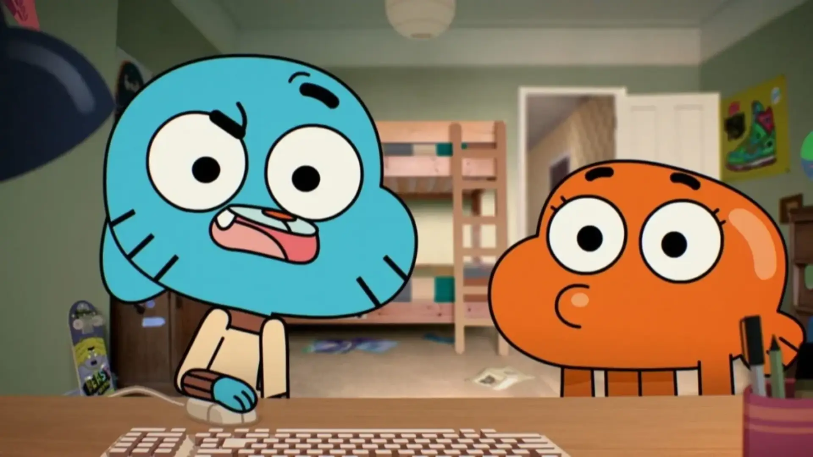
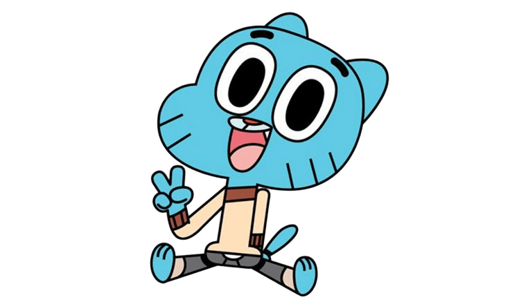
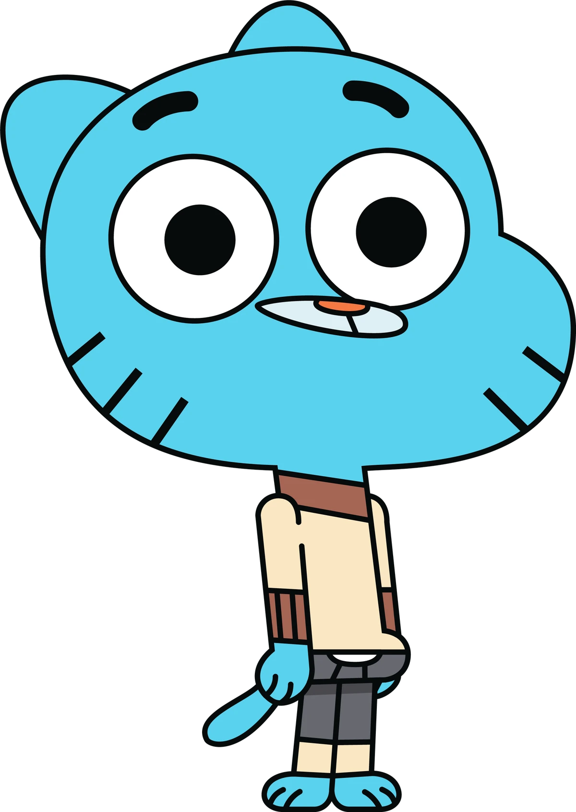
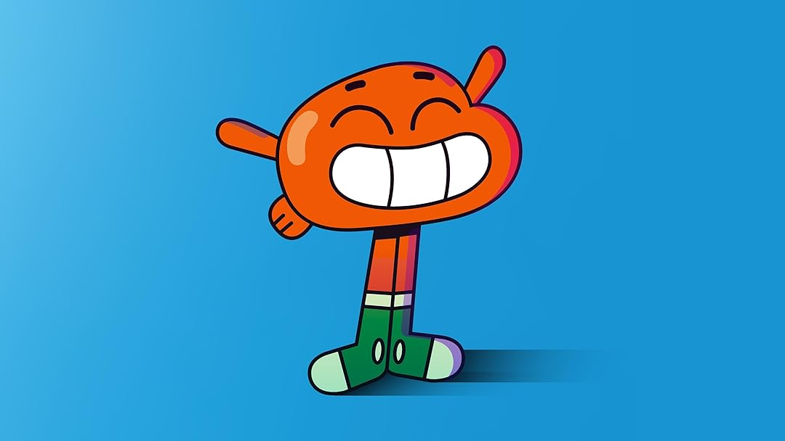
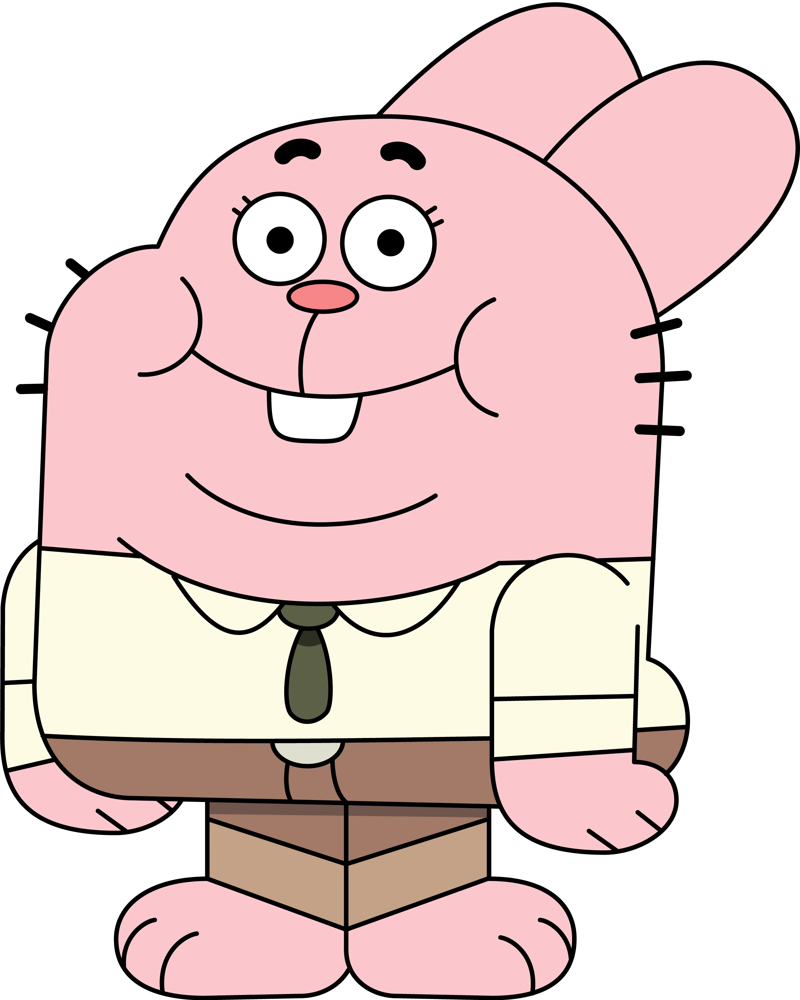

Gumball

Gumball Watterson é um gato azul de doze anos de idade que está propenso a causar danos na cidade devido a não ficar dentro da caixa. Ele é bastante egoísta e um veterano arrogante; apesar disso, Gumball tem um grande coração e é surpreendentemente altruísta. Embora Gumball possa ser inteligente às vezes, ele não é muito sábio, muitas vezes fazendo as coisas da maneira mais intrincada e direcionando sua energia para esforços infrutíferos. Embora Gumball possa ser cínico em relação à sociedade e às pessoas ao seu redor, ele acredita que existe uma suposta saída para esse estilo de vida.
Darwin

Darwin Watterson é o irmão adotivo de Gumball e seu melhor amigo. Ele foi inicialmente o peixe de estimação de Gumball, embora ele tenha sido prontamente integrado à família quando cresceu nas pernas e nos pulmões. Darwin é um espírito de bom coração que vê o melhor em todos e só quer ver os outros felizes. Como o braço direito de Gumball, ele é rápido em apontar as falhas em seus planos equivocados e age como uma espécie de "guardião moral" para ele. Darwin é um otimista que ajuda a mostrar a Gumball os bens maiores da vida e sua existência apenas ilumina o dia de todos.
Ricardo

Anais

batata

Banana